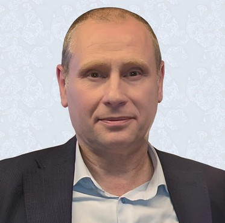

Фахівець з управління виробництвом / Specialist in production management, фахівець у сфері якості процесів та безпечності харчової продукції / specialist in the field of process quality and food safety
Волоконський Андрій Васильович
Прагнення вдосконалити, упорядкувати та систематизувати процеси у будь-якій сфері. Переконаність у тому, що переваги будь-якої людини у професійній та діловій сферах базуються переважно на порядності, особистій відповідальності та знаннях / I have a desire to improve, order and systematize processes in any field. The conviction that the advantages of any person in the professional and business spheres are based mainly on decency, personal responsibility and knowledge
PROJECTS
- Editor.............. [1991-1992]
- Sales................ [1993-1998]
- Quality........... [1999-2022]
WORK PLACES
Quality manager UHPC LLC
2017-2022 | Kalynivka, Ukraine
- заступник з якості директора ТОВ "УХПК" (виробництво рибної продукції). 100% готової продукції виготовлялось для країн Європи
Quality manager GRONA LLC
2017 | Skvira, Ukraine
- начальник відділу сертифікації, стандартизації та якості (виробництво кондитерських виробів). 80% продукції постачалось за кордон
Quality manager OLIMP COMPANY
2002-2016 | Donetsk-Malynivka-Bakhchisaray, Ukraine
- 2015-2016 директор з виробництва Бахчісарайського винно-коньячного заводу
- 2005-2014 директор з якості Компанії "Олімп"
- 2003-2005 заступник з якості керівника Групи горілчаних заводів
- 2002-2003 заступник з якості директора ЛГЗ "Лік"
Quality controller MITSUI HOUM JSC
2001-2002 | Chiba, Japan
- співробітник відділу технічного контролю (виробництво збірних житлових конструкцій)
Quality manager HERKULES LLC
1999-2001 | Donetsk, Ukraine
- заступник з якості директора заводу "Геркулес" (м'ясо-молочне виробництво, виробництво морозива, газованих напоїв)
EDUCATION
- 1989 Донецький політехнічний інститут, спеціальність "Автоматика і телемеханіка"
- 2003 Курси з впроваджання системи управління базами данних ORACL
- 2004 ДНТ університет, спеціальність "Якість, стандартизація та сертифікація"
- 2005 Курси з впроваджання системи BSC (Balanced Scorecard);
- 2007 Мооdy International Сourses - проходження акредитованого в IRCA курсу міжнародних аудиторів QMS

CONTACTS
Phone: (+38095)455-25-16
E mail: volokonsky@ukr.net
TECH SKILLS
- FMEA, PDCA, SWOT
- ISO 14001, ISO 14020
- ISO 2859, ISO 31000
- ISO 9001, ISO 22000, НАССР
- BSC
- BSCI
- GMP
- IFS food
- FSSC 22000
- BRC food safety
- Global GAP
- MSC/ASC
- BIO
RESULTS
- Ensuring communications with government agencies such as the State Service of Ukraine for Food Safety and Consumer Protection, the Ministry of Agrarian Policy, the Ukrainian Center for Standardization, Certification and Quality
- Implementation and support of the food safety and quality system at enterprises of the meat and dairy, liquor and vodka, confectionery and fish industries
- Development, implementation and support of a system for compensating the company's costs due to the release of low-quality products